36 Writing For Loops
In this third chapter on repeated operations, we are going to discuss writing for loops.
In other documents you read, you may see for loops referred to as iterative processing, iterative operations, iteration, or just loops. Regardless of what you call them, for loops are not unique to R. Many if not all statistical software applications allow users to write for loops; although, the exact words and symbols used to construct them may differ slightly from one program to another.
Let’s take a look at an example. After seeing a working example, we will take the code apart iteratively (do you see what we did there? 😆) to figure out how it works.
We’ll start by simulating some data. This is the same data we simulated at the beginning of the chapter on column-wise operations in dplyr. It’s a data frame that contains three columns of 10 random numbers:
library(dplyr)set.seed(123)
df_xyz <- tibble(
x = rnorm(10),
y = rnorm(10),
z = rnorm(10)
) %>%
print()# A tibble: 10 × 3
x y z
<dbl> <dbl> <dbl>
1 -0.560 1.22 -1.07
2 -0.230 0.360 -0.218
3 1.56 0.401 -1.03
4 0.0705 0.111 -0.729
5 0.129 -0.556 -0.625
6 1.72 1.79 -1.69
7 0.461 0.498 0.838
8 -1.27 -1.97 0.153
9 -0.687 0.701 -1.14
10 -0.446 -0.473 1.25 As we previously discussed, if we wanted to find the mean of each column before learning about repeated operations, we would probably have written code like this:
df_xyz %>%
summarise(
x_mean = mean(x),
y_mean = mean(y),
z_mean = mean(y)
)# A tibble: 1 × 3
x_mean y_mean z_mean
<dbl> <dbl> <dbl>
1 0.0746 0.209 0.209In the previous chapter, we learned how to use the across() function to remove unnecessary repetition from our code like this:
df_xyz %>%
summarise(
across(
.cols = everything(),
.fns = mean,
.names = "{col}_mean"
)
)# A tibble: 1 × 3
x_mean y_mean z_mean
<dbl> <dbl> <dbl>
1 0.0746 0.209 -0.425An alternative approach that would also work is to use a for loop like this:
xyz_means <- vector("double", ncol(df_xyz))
for(i in seq_along(df_xyz)) {
xyz_means[[i]] <- mean(df_xyz[[i]])
}xyz_means[1] 0.07462564 0.20862196 -0.42455887Most people would agree that the for loop code is a little more complicated looking, and it’s a little bit harder to quickly glance at it and figure out what’s going on. It may even be a little bit intimidating for some of you.
Also, note that the result from the code that uses the across() function is a data frame with three columns and one row. The result from the code that uses a for loop is a character vector with three elements.
For the particular case above, we prefer to use the across() function instead of a for loop. However, as we will see below, there are some challenges that can be overcome with for loops that cannot currently be overcome with the across() function. But, before we jump into more examples, let’s take a look at the basic structure of the for loop.
36.1 How to write for loops
For starters, using for loops in practice will generally require us to write code for two separate structures: An object to contain the results of our for loop and the for loop itself.
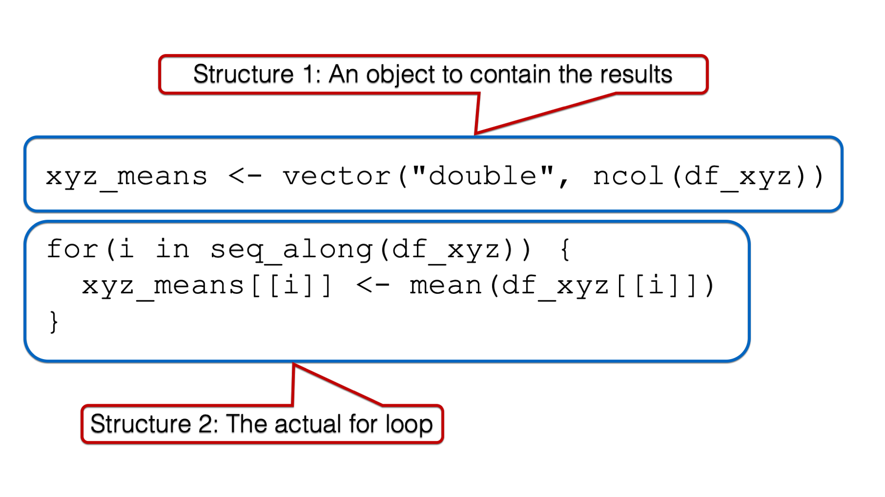
In practice, we will generally write the code for structure 1 before writing the code for structure 2. However, it will be easier to understand why we need structure 1 if we first learn about the components of the for loop, and how they work together. Further, it will likely be easiest to understand the components of the for loop if we start on the inside and work our way out. Therefore, the first component of for loops that we are going to discuss is the body.
36.1.1 The for loop body
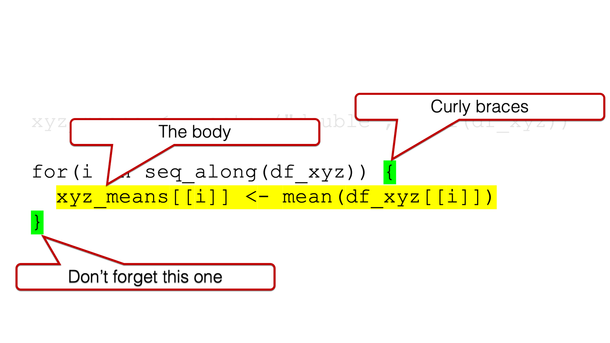
Similar to when we learned to write our own functions, the body of the for loop is where all the “stuff” happens. This is where we write the code that we want to be executed over and over. In our example, we want the mean value of the x column, the mean value of the y column, and the mean value of the z column of our data frame called df_xyz. We can do that manually like this using dollar sign notation:
mean(df_xyz$x)[1] 0.07462564mean(df_xyz$y)[1] 0.208622mean(df_xyz$z)[1] -0.4245589Or, we’ve also learned how to get the same result using bracket notation:
mean(df_xyz[["x"]])[1] 0.07462564mean(df_xyz[["y"]])[1] 0.208622mean(df_xyz[["z"]])[1] -0.4245589In the code above, we used the quoted column names inside the double brackets. However, we could have also used each column’s position inside the double brackets. In other words, we can use 1 to refer to the x column because it is the first column in the data frame, we can use 2 to refer to the y column because it is the second column in the data frame, and we can use 3 to refer to the z column because it is the third column in the data frame:
mean(df_xyz[[1]])[1] 0.07462564mean(df_xyz[[2]])[1] 0.208622mean(df_xyz[[3]])[1] -0.4245589For reasons that will become clearer later, this will actually be the syntax we want to use inside of our for loop.
Notice, however, the we copied the same code more than twice above. For all of the reasons we’ve already discussed, we would like to just type mean(df_xyz[[ # ]] once and have R fill in the number inside the double brackets for us, one after the other. As you’ve probably guessed, that’s exactly what the for loop does.
36.1.2 The for() function
All for loops start with the for() function. This is how you tell R that you are about to write a for loop.
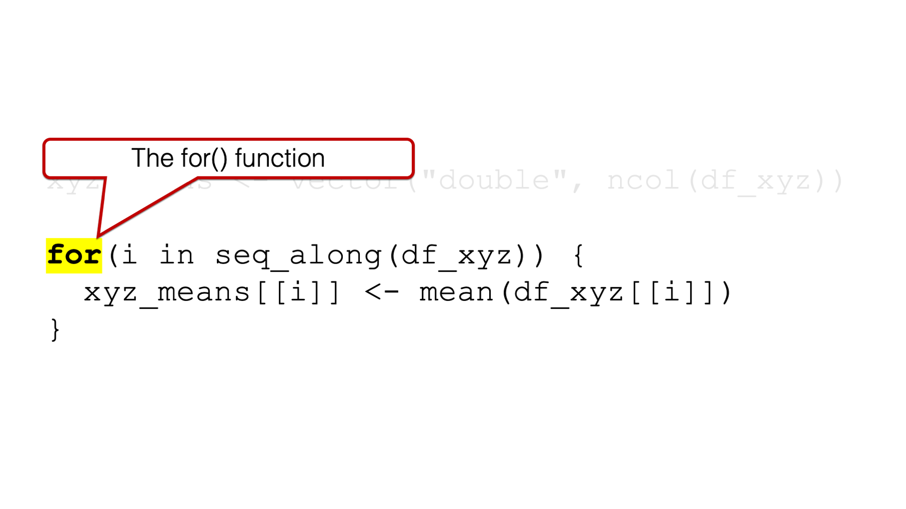
In the examples in this book, the arguments to the for() function are generally going to follow this pattern:
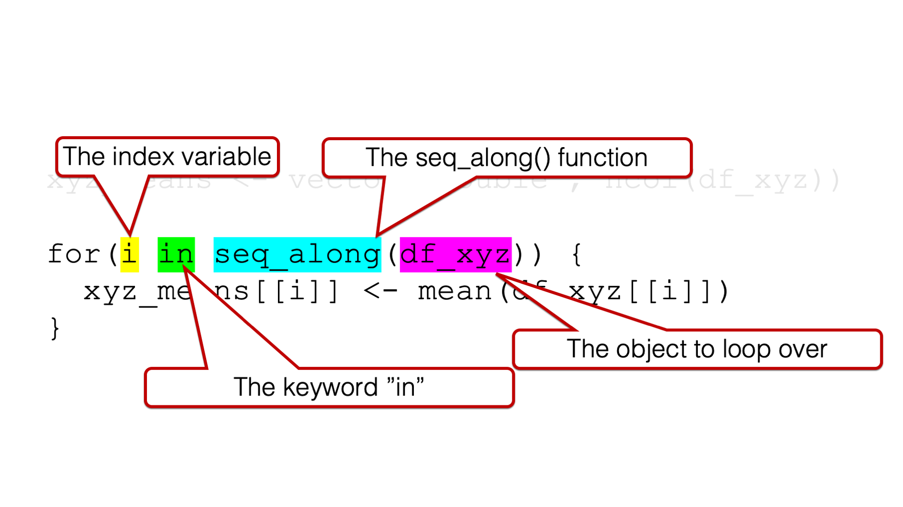
1️⃣An index variable, which is also sometimes called a “counter,” to the left of the keyword in.
2️⃣The keyword in.
3️⃣The name of the object we want to loop (or iterate) over — often passed to theseq_along() function.
It can be a little intimidating to look at, but that’s the basic structure. We will talk about all three arguments simultaneously because they all work together, and we will get an error if we are missing any one of them:
# No index variable
for(in 1) {
print(i)
}Error in parse(text = input): <text>:2:5: unexpected 'in'
1: # No index variable
2: for(in
^# No keyword "in"
for(i 1) {
print(i)
}Error in parse(text = input): <text>:2:7: unexpected numeric constant
1: # No keyword "in"
2: for(i 1
^# No object to loop over
for(i in ) {
print(i)
}Error in parse(text = input): <text>:2:10: unexpected ')'
1: # No object to loop over
2: for(i in )
^So, what happens when we do have all three of these components? Well, the index variable will take on each value of the object to loop over iteratively (i.e., one at a time). If there is only one object to loop over, this is how R sees the index variable inside of the loop:
for(i in 1) {
print(i)
}[1] 1If there are multiple objects to loop over, this is how R sees the index variable inside of the loop:
for(i in c(1, 2, 3)) {
print(i)
}[1] 1
[1] 2
[1] 3Notice that the values being printed out are not a single numeric vector with three elements (e.g. [1] 1, 2, 3) like the object we started with to the right of the keyword in. Instead, three vectors with one element each are being printed out. One for 1 (i.e., [1] 1), one for 2 (i.e., [1] 2), and one for 3 (i.e., [1] 3). This is pointed out because it illustrates the iterative nature of a for loop. The index variable doesn’t take on the values of the object to the right of the keyword in simultaneously. It takes them on iteratively, or separately, one after the other.
Further, it may not be immediately obvious at this point, but that’s the basic “magic” of the for loop. The index variable changes once for each element of whatever object is on the right side of the keyword in. Even the most complicated for loops generally start from this basic idea.
Note that the index variable does not have to be the letter i. It can be any letter:
for(x in c(1, 2, 3)) {
print(x)
}[1] 1
[1] 2
[1] 3Or even a word:
for(number in c(1, 2, 3)) {
print(number)
}[1] 1
[1] 2
[1] 3However, i is definitely the most common letter to use as the index variable and we suggest that you also use it in most cases. It’s just what people will expect to see and easily understand.
Now, let’s discuss the object to the right of the keyword in. In all of the examples above, we passed a vector to the right of the keyword in. As you saw, when there is a vector to the right of the keyword in, the index variable takes on the value of each element of the vector. However, the object to the right of the keyword in does not have to be a vector. In fact, it will often be a data frame.
When we ask the for loop to iterate over a data frame, what value do you think the index variable will take? The value of each cell of the data frame? The name or number of each column? The name or number of each row? Let’s see:
for(i in df_xyz) {
print(i)
} [1] -0.56047565 -0.23017749 1.55870831 0.07050839 0.12928774 1.71506499
[7] 0.46091621 -1.26506123 -0.68685285 -0.44566197
[1] 1.2240818 0.3598138 0.4007715 0.1106827 -0.5558411 1.7869131
[7] 0.4978505 -1.9666172 0.7013559 -0.4727914
[1] -1.0678237 -0.2179749 -1.0260044 -0.7288912 -0.6250393 -1.6866933
[7] 0.8377870 0.1533731 -1.1381369 1.2538149It may not be totally obvious to you, but inside the for loop above, the index variable took on three separate vectors of values – one for each column in the data frame. Of course, getting the mean value of each of these vectors is equivalent to getting the mean value of each column in our data frame. Remember, data frame columns are vectors. So, let’s replace the print() function with the mean() function in the for loop body and see what happens:
for(i in df_xyz) {
mean(i)
}Hmmm, it doesn’t seem as though anything happened. This is probably a good time to mention a little peculiarity about using for loops. As you can see in the example above, the return value of functions, and the contents of objects, referenced inside of the for loop body will not be printed to the screen unless we explicitly pass them to the print() function:
for(i in df_xyz) {
print(mean(i))
}[1] 0.07462564
[1] 0.208622
[1] -0.4245589It worked! This is the exact same answer we got above. And, if all we want to do is print the mean values of x, y, and z to the screen, then we could stop here and call it a day. However, we often want to save our analysis results to an object. In the chapter on using column-wise operations with dplyr, we saved our summary statistics to an object in the usual way (i.e., with the assignment arrow):
xyz_means <- df_xyz %>%
summarise(
across(
.cols = everything(),
.fns = mean,
.names = "{col}_mean"
)
)From there, we can manipulate the results, save the results to a file, or print them to screen:
xyz_means# A tibble: 1 × 3
x_mean y_mean z_mean
<dbl> <dbl> <dbl>
1 0.0746 0.209 -0.425At first, it may seem as though we can assign the results of our for loop to an object in a similar way:
xyz_means <- for(i in df_xyz) {
mean(i)
}xyz_meansNULLUnfortunately, this doesn’t work. Instead, we need to create an object that can store the results of our for loop. Then, we update (i.e., add to) that object at each iteration of the for loop. That brings us back to structure number 1.
Because the result of our for loop will be three numbers – the mean of x, the mean of y, and the mean of z – the most straightforward object to store them in is a numeric vector with a length of three (i.e., three “slots”). We can use the vector() function to create an empty vector:
my_vec <- vector()
my_veclogical(0)As you can see, by default, the vector() function creates a logical vector with length zero. We can change the vector type to numeric by passing "numeric" to the mode argument of the vector() function. We can also change the length to 3 by passing 3 to the length argument of the vector() function, and because we know we want this vector to hold the mean values of x, y, and z, let’s name it xyz_means:
xyz_means <- vector("numeric", 3)
xyz_means[1] 0 0 0Finally, let’s update xyz_means inside our for loop body:
for(i in df_xyz) {
xyz_means <- mean(i)
}xyz_means[1] -0.4245589Hmmm, we’re getting closer, but that obviously still isn’t the result we want. Below, we attempt to illustrate what’s going on inside our loop.
R starts executing at the top of the for loop. In the first iteration, the value of i is set to a numeric vector with the same values as the x column in df_xyz. Then, the i in mean(i) inside the for loop body is replaced with those numeric values. Then, the mean of those numeric values is calculated and assigned to the object named xyz_means.
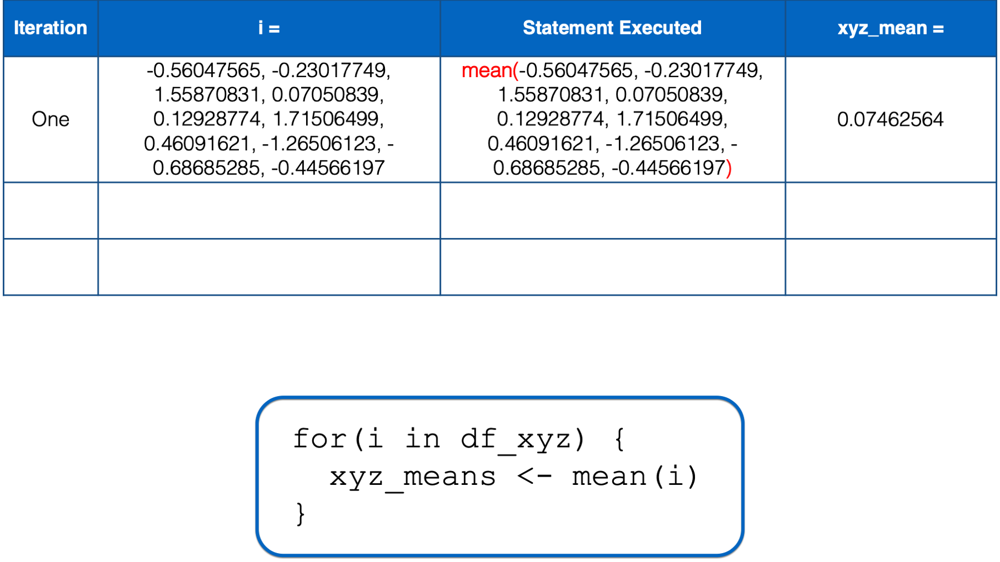
At this point, there is no more code left to execute inside of the for loop, so R returns to the top of the loop.
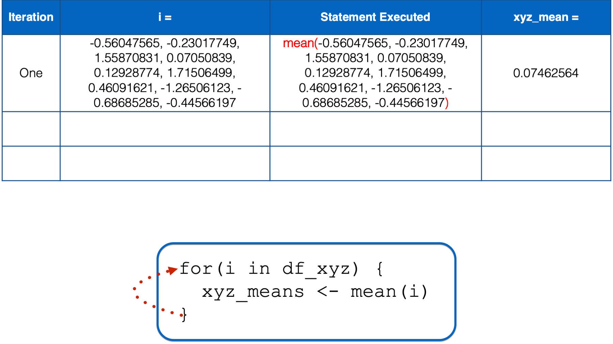
i has not yet taken every value of the object to the right of the keyword in, so R starts another iteration of the for loop. In the second iteration, the value of i is set to a numeric vector with the same values as the y column in df_xyz. Then, the i in mean(i) inside the for loop body is replaced with those numeric values. Then, the mean of those numeric values is calculated and assigned to the object named xyz_means.
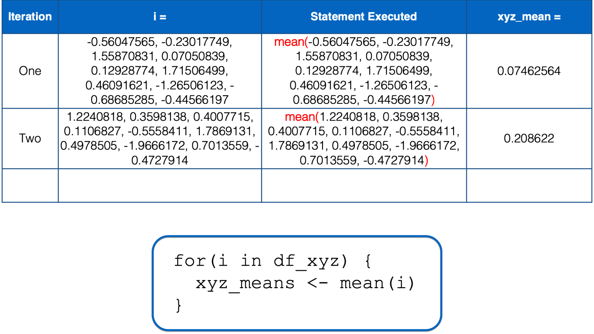
At this point, there is no more code left to execute inside of the for loop, so R returns to the top of the loop.
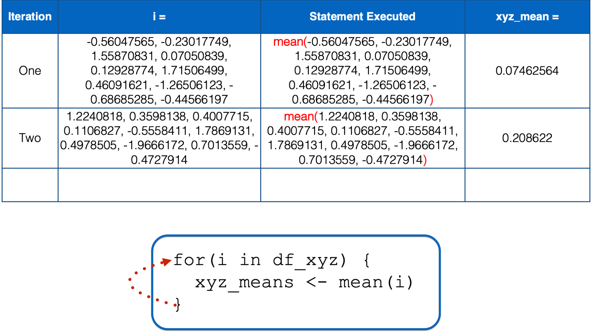
i still has not yet taken every value of the object to the right of the keyword in, so R starts another iteration of the for loop. In the third iteration, the value of i is set to a numeric vector with the same values as the z column in df_xyz. Then, the i in mean(i) inside the for loop body is replaced with those numeric values. Then, the mean of those numeric values is calculated and assigned to the object named xyz_means.
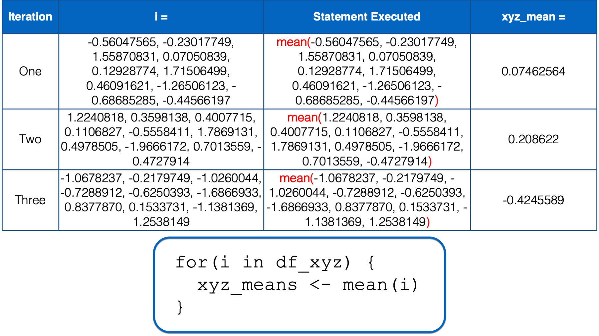
At this point, there is no more code left to execute inside of the for loop, so R returns to the top of the loop. However, this time, i has taken every value of the object to the right of the keyword in, so R does not start another iteration. It leaves the looping process, and the value of xyz_means remains -0.4245589 – The result we got above.
You might be thinking, “wait, we made three slots in the xyz_means vector. Why does it only contain one number?” Well, remember that all we have to do to overwrite one object with another object is to assign the second object to the same name. For example, let’s create a vector with three values called my_vec:
my_vec <- c(1, 2, 3)
my_vec[1] 1 2 3Now, let’s assign another value to my_vec:
my_vec <- -0.4245589
my_vec[1] -0.4245589As you can see, assignment (<-) doesn’t add to the vector, it overwrites (i.e., replaces) the vector. That’s exactly what was happening inside of our for loop. To R, it basically looked like this:
xyz_means <- 0.07462564
xyz_means <- 0.208622
xyz_means <- -0.4245589
xyz_means[1] -0.4245589What we really want is to create the empty vector:
xyz_means <- vector("numeric", 3)
xyz_means[1] 0 0 0And then add a value to each slot in the vector. Do you remember how to do this?
We can do this using bracket notation:
xyz_means[[1]] <- 0.07462564
xyz_means[[2]] <- 0.208622
xyz_means[[3]] <- -0.4245589
xyz_means[1] 0.07462564 0.20862200 -0.42455890That’s exactly the result we want.
Does that code above remind you of any other code we’ve already seen? How about this code:
mean(df_xyz[[1]])[1] 0.07462564mean(df_xyz[[2]])[1] 0.208622mean(df_xyz[[3]])[1] -0.4245589Hmmm, what if we combine the two? First, let’s once again create our empty vector, and then try combining the two code chunks above to fill it:
xyz_means <- vector("numeric", 3)
xyz_means[1] 0 0 0xyz_means[[1]] <- mean(df_xyz[[1]])
xyz_means[[2]] <- mean(df_xyz[[2]])
xyz_means[[3]] <- mean(df_xyz[[3]])
xyz_means[1] 0.07462564 0.20862196 -0.42455887Again, that’s exactly the result we want. Of course, there is still unnecessary repetition. If you look at the code carefully, you may notice that the only thing that changes from line to line is the number inside the double brackets. So, if we could just type xyz_means[[ # ]] <- mean(df_xyz[[ # ]]) once, and update the number inside the double brackets, we should be able to get the result we want. We’ve actually already seen how to do that with a for loop too. Remember this for loop for the very beginning of the chapter:
for(i in c(1, 2, 3)) {
print(i)
}[1] 1
[1] 2
[1] 3That looks promising, right? Let’s once again create our empty vector, and then try combining the two code chunks above to fill it:
xyz_means <- vector("numeric", 3)
xyz_means[1] 0 0 0for(i in c(1, 2, 3)) {
xyz_means[[i]] <- mean(df_xyz[[i]])
}xyz_means[1] 0.07462564 0.20862196 -0.42455887It works! We have used a for loop to successfully remove the unnecessary repetition from our code. However, there’s still something we could do to make the code more robust. In the for loop above, we knew that we needed three iterations. Therefore, we passed c(1, 2, 3) as the object to the right of the keyword in. But, what if we didn’t know exactly how columns there were? What if we just knew that we wanted to iterate over all the columns in the data frame passed to the right of the keyword in. How could we do that?
We can do that with the seq_along() function. When we pass a vector to the seq_along() function, it returns a sequence of integers with the same length as the vector being passed, starting at one. For example:
seq_along(c(4, 5, 6))[1] 1 2 3Or:
seq_along(c("a", "b", "c", "d"))[1] 1 2 3 4Similarly, when we pass a data frame to the seq_along() function, it returns a sequence of integers with a length equal to the number of columns in the data frame being passed, starting at one. For example:
seq_along(df_xyz)[1] 1 2 3Therefore, we can replace for(i in c(1, 2, 3)) with for(i in seq_along(df_xyz)) to make our code more robust (i.e., it will work in more situations):
xyz_means <- vector("numeric", 3)
for(i in seq_along(df_xyz)) {
xyz_means[[i]] <- mean(df_xyz[[i]])
}
xyz_means[1] 0.07462564 0.20862196 -0.42455887Just to make sure that we really understand what’s going on in the code above, let’s walk through the entire process one more time.
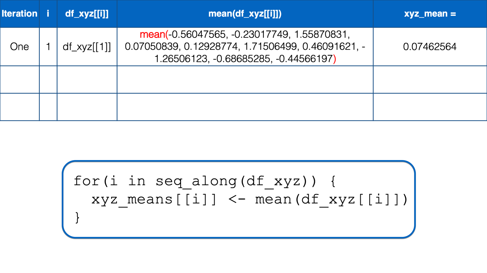
R starts executing at the top of the for loop. In the first iteration, the value of i is set to the first value in seq_along(df_xyz), which is 1. Then, the i in df_xyz[[i]] inside the for loop body is replaced with 1. Then, R calculates the mean of df_xyz[[1]], which is x column of the df_xyz data frame. Finally, the mean value is assigned to xyz_means[[i]], which is xyz_means[[1]] in this iteration. So, the value of the first element in the xyz_means vector is 0.07462564.
At this point, there is no more code left to execute inside of the for loop, so R returns to the top of the loop. i has not yet taken every value of the object to the right of the keyword in, so R starts another iteration of the for loop.
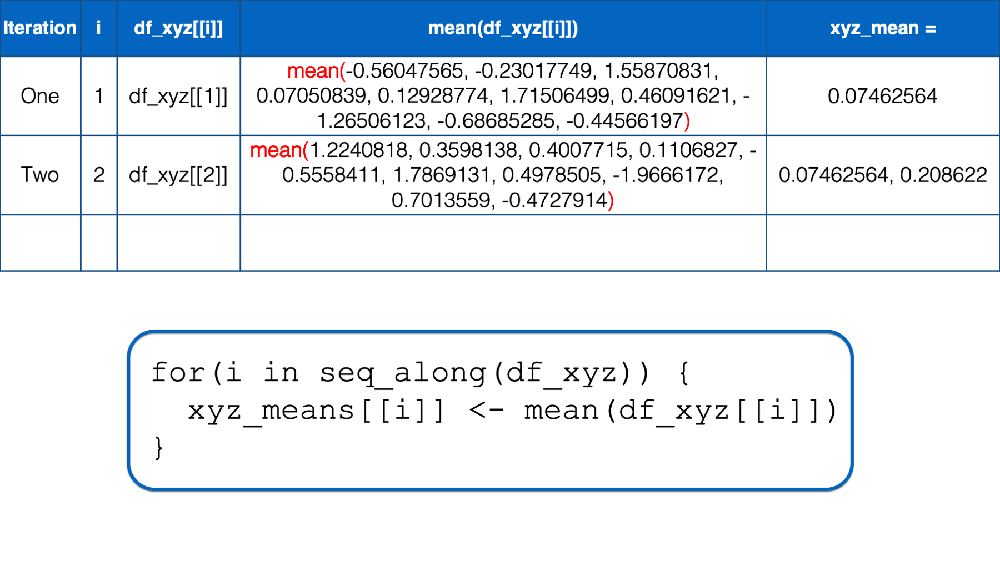
In the second iteration, the value of i is set to the second value in seq_along(df_xyz), which is 2. Then, the i in df_xyz[[i]] inside the for loop body is replaced with 2. Then, R calculates the mean of df_xyz[[2]], which is y column of the df_xyz data frame. Finally, the mean value is assigned to xyz_means[[i]], which is xyz_means[[2]] in this iteration. So, the value of the second element in the xyz_means vector is 0.20862196.
At this point, there is no more code left to execute inside of the for loop, so R returns to the top of the loop. i still has not yet taken every value of the object to the right of the keyword in, so R starts another iteration of the for loop.
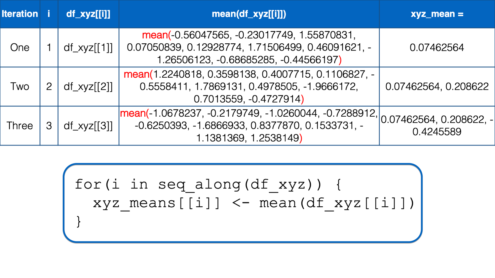
In the third iteration, the value of i is set to the third value in seq_along(df_xyz), which is 3. Then, the i in df_xyz[[i]] inside the for loop body is replaced with 3. Then, R calculates the mean of df_xyz[[3]], which is z column of the df_xyz data frame. Finally, the mean value is assigned to xyz_means[[i]], which is xyz_means[[3]] in this iteration. So, the value of the third element in the xyz_means vector is -0.42455887.
At this point, there is no more code left to execute inside of the for loop, so R returns to the top of the loop. However, this time, i has taken every value of the object to the right of the keyword in, so R does not start another iteration. It leaves the looping process, and the value of xyz_means remains 0.07462564, 0.20862196, -0.4245589.
There’s one final adjustment we should probably make to the code above. Did you notice that when we create the empty vector to contain our results, we’re still hard coding its length to 3? For the same reason we replaced for(i in c(1, 2, 3)) with for(i in seq_along(df_xyz)), we want to replace vector("numeric", 3) with vector("numeric", length(df_xyz)).
Now, let’s add a fourth column to our data frame:
df_xyz <- df_xyz %>%
mutate(a = rnorm(10)) %>%
print()# A tibble: 10 × 4
x y z a
<dbl> <dbl> <dbl> <dbl>
1 -0.560 1.22 -1.07 0.426
2 -0.230 0.360 -0.218 -0.295
3 1.56 0.401 -1.03 0.895
4 0.0705 0.111 -0.729 0.878
5 0.129 -0.556 -0.625 0.822
6 1.72 1.79 -1.69 0.689
7 0.461 0.498 0.838 0.554
8 -1.27 -1.97 0.153 -0.0619
9 -0.687 0.701 -1.14 -0.306
10 -0.446 -0.473 1.25 -0.380 And see what happens when we pass it to our new, robust for loop code:
xyz_means <- vector("numeric", length(df_xyz)) # Using length() instead of 3
for(i in seq_along(df_xyz)) { # Using seq_along() instead of c(1, 2, 3)
xyz_means[[i]] <- mean(df_xyz[[i]])
}
xyz_means[1] 0.07462564 0.20862196 -0.42455887 0.32204455Our for loop now gives us the result we want no matter how many columns are in the data frame. Having the flexibility to loop over an arbitrary number of columns wasn’t that important in this case – we knew exactly how many columns we wanted to loop over. However, what if we wanted to add more columns in the future? Using the second method, we wouldn’t have to make any changes to our code. This is often an important consideration when we embed for loops inside of functions that we write ourselves.
For example, maybe we think, “that for loop above was really useful. I want to write it into a function so that I can use it again in my other projects.” Well, we’ve already seen how to take our working code, embed it inside of a function, make it more general, and assign it a name. If you forgot how to do this, please review the function writing process. In this case, that process would result in something like this:
multi_means <- function(data) {
# Create a structure to contain results
result <- vector("numeric", length(data))
# Iterate over each column of data
for(i in seq_along(data)) {
result[[i]] <- mean(data[[i]])
}
# Return the result
result
}Which we can easily apply to our data frame like this:
multi_means(df_xyz)[1] 0.07462564 0.20862196 -0.42455887 0.32204455Further, because we’ve made the for loop code inside of the function body flexible with length() and seq_along() we can easily pass any other data frame (with all numeric columns) to our function like this:
set.seed(123)
new_df <- tibble(
age = rnorm(10, 50, 10),
height = rnorm(10, 65, 5),
weight = rnorm(10, 165, 10)
) %>%
print()# A tibble: 10 × 3
age height weight
<dbl> <dbl> <dbl>
1 44.4 71.1 154.
2 47.7 66.8 163.
3 65.6 67.0 155.
4 50.7 65.6 158.
5 51.3 62.2 159.
6 67.2 73.9 148.
7 54.6 67.5 173.
8 37.3 55.2 167.
9 43.1 68.5 154.
10 45.5 62.6 178.multi_means(new_df)[1] 50.74626 66.04311 160.75441If we want our for loop to return the results with informative names, similar those that are returned when we use the across() method, we can simply add one line of code to our for loop body that names each result:
xyz_means <- vector("numeric", length(df_xyz))
for(i in seq_along(df_xyz)) {
xyz_means[[i]] <- mean(df_xyz[[i]])
names(xyz_means)[[i]] <- paste0(names(df_xyz)[[i]], "_mean") # Name results here
}
xyz_means x_mean y_mean z_mean a_mean
0.07462564 0.20862196 -0.42455887 0.32204455 If it isn’t quite clear to you why that code works, try picking it apart, replacing i with a number, and figuring out how it works.
We can make our results resemble those returned by the across() method even more by converting our named vector to a data frame like this:
xyz_means %>%
as.list() %>%
as_tibble()# A tibble: 1 × 4
x_mean y_mean z_mean a_mean
<dbl> <dbl> <dbl> <dbl>
1 0.0746 0.209 -0.425 0.322Finally, we can update our multi_means() function with changes we made above so that our results are returned as a data frame with informative column names:
multi_means <- function(data) {
# Create a structure to contain results
result <- vector("numeric", length(data))
# Iterate over each column of data
for(i in seq_along(data)) {
result[[i]] <- mean(data[[i]])
names(result)[[i]] <- paste0(names(data)[[i]], "_mean")
}
# Return the result as a tibble
as_tibble(as.list(result))
}multi_means(new_df)# A tibble: 1 × 3
age_mean height_mean weight_mean
<dbl> <dbl> <dbl>
1 50.7 66.0 161.36.2 Using for loops for data transfer
In the previous section, we used an example that wasn’t really all that realistic, but it was useful (hopefully) for learning the mechanics of for loops. As mentioned at the beginning of the chapter, rather than using a for loop for the analysis above, using across() with summarise() might be preferable.
However, keep in mind that across() is designed specifically for repeatedly applying functions column-wise (i.e., across columns) of a single data frame in conjunction with dplyr verbs. By definition, if we are repeating code outside of dplyr, or if we are applying code across multiple data frames, then we probably aren’t going to be able to use across() to complete our coding task.
For example, let’s say that we have data stored across multiple sheets of an Excel workbook. This simulated data contains some demographic information about three different cities: Houston, Atlanta, and Charlotte. We need to import each sheet, clean the data, and combine them into a single data frame in order to complete our analysis. First, we will load the readxlpackage:
library(readxl)You may click here to download this file to your computer.
Then, we may import each sheet like this:
houston <- read_excel(
"city_ses.xlsx",
sheet = "Houston"
) %>%
print()# A tibble: 5 × 4
pid age sex ses_score
<chr> <dbl> <chr> <dbl>
1 001 13 F 88
2 003 13 F 78
3 007 14 M 83
4 014 12 F 76
5 036 13 M 84atlanta <- read_excel(
"city_ses.xlsx",
sheet = "Atlanta"
) %>%
print()# A tibble: 5 × 4
id age gender ses_score
<chr> <dbl> <chr> <dbl>
1 002 14 M 64
2 009 15 M 35
3 012 13 F 70
4 013 13 F 66
5 022 12 F 59charlotte <- read_excel(
"city_ses.xlsx",
sheet = "Charlotte"
) %>%
print()# A tibble: 5 × 4
pid age sex ses
<chr> <dbl> <chr> <dbl>
1 004 13 F 84
2 011 14 M 66
3 018 12 M 92
4 023 12 M 89
5 030 13 F 83🚩In the code chunks above, we have essentially the same code copied more than twice. That’s a red flag that we should be thinking about removing unnecessary repetition from our code. Of course, we could write our own function to reduce some of the repetition:
import_cities <- function(sheet) {
df <- read_excel(
"city_ses.xlsx",
sheet = sheet
)
}houston <- import_cities("Houston") %>% print()# A tibble: 5 × 4
pid age sex ses_score
<chr> <dbl> <chr> <dbl>
1 001 13 F 88
2 003 13 F 78
3 007 14 M 83
4 014 12 F 76
5 036 13 M 84atlanta <- import_cities("Atlanta") %>% print()# A tibble: 5 × 4
id age gender ses_score
<chr> <dbl> <chr> <dbl>
1 002 14 M 64
2 009 15 M 35
3 012 13 F 70
4 013 13 F 66
5 022 12 F 59charlotte <- import_cities("Charlotte") %>% print()# A tibble: 5 × 4
pid age sex ses
<chr> <dbl> <chr> <dbl>
1 004 13 F 84
2 011 14 M 66
3 018 12 M 92
4 023 12 M 89
5 030 13 F 83That method is better. And depending on the circumstances of your project, it may be the best approach. However, an alternative approach would be to use a for loop. Using the for loop approach might look something like this:
# Save the file path to an object so we don't have to type it repeatedly
# or hard-code it in.
path <- "city_ses.xlsx"
# Use readxl::excel_sheets to get the name of each sheet in the workbook.
# this makes our code more robust.
sheets <- excel_sheets(path)
for(i in seq_along(sheets)) {
# Convert sheet name to lowercase before using it to name the df
new_nm <- tolower(sheets[[i]])
assign(new_nm, read_excel(path, sheet = sheets[[i]]))
}houston# A tibble: 5 × 4
pid age sex ses_score
<chr> <dbl> <chr> <dbl>
1 001 13 F 88
2 003 13 F 78
3 007 14 M 83
4 014 12 F 76
5 036 13 M 84atlanta# A tibble: 5 × 4
id age gender ses_score
<chr> <dbl> <chr> <dbl>
1 002 14 M 64
2 009 15 M 35
3 012 13 F 70
4 013 13 F 66
5 022 12 F 59charlotte# A tibble: 5 × 4
pid age sex ses
<chr> <dbl> <chr> <dbl>
1 004 13 F 84
2 011 14 M 66
3 018 12 M 92
4 023 12 M 89
5 030 13 F 83👆Here’s what we did above:
We used a for loop to import every sheet from an Excel workbook.
First, we saved the path to the Excel workbook to a separate object. We didn’t have to do this. However, doing so prevented us from having to type out the full file path repeatedly in the rest of our code. Additionally, if the file path ever changed, we would only have to update it in one place.
Second, we used the
excel_sheets()function to create a character vector containing each sheet name. We didn’t have to do this. We could have typed each sheet name manually. However, there shouldn’t be any accidental typos if we use theexcel_sheets()function, and we don’t have to make any changes to our code if more sheets are added to the Workbook in the future.Inside the for loop, we assigned each data frame created by the
read_excel()function to our global environment using theassign()function. We haven’t used theassign()function before, but you can read the help documentation by typing?assignin your R console.The first argument to the
assign()function isx. The value you pass toxshould be the name of the object you want to create. Above, we passednew_nm(for new name) to thexargument. At each iteration of the for loop,new_nmcontained the name of each sheet insheets. So,Houstonat the first iteration,Atlantaat the second iteration, andCharlotteat the third iteration. Of course, we like using lowercase names for our data frames, so we usedtolower()to convertHouston,Atlanta, andCharlottetohouston,atlanta, andcharlotte. These will be the names used for each data frame assigned to our global environment inside of the for loop.The second argument to the
assign()function isvalue. The value you pass tovalueshould be the contents you want to assign the object with the name you passed to thexargument. Above, we passed the code that imports each sheet of thecity_ses.xlsxdata frame to thevalueargument.
For loops can often be helpful for data transfer tasks. In the code above, we looped over sheets of a single Excel workbook. However, we could have similarly looped over file paths to import multiple different Excel workbooks instead. We could have even used nested for loops to import multiple sheets from multiple Excel workbooks. The code would not have looked drastically different.
36.3 Using for loops for data management
In the chapter on writing functions, we created an is_match() function. In that scenario, we wanted to see if first name, last name, and street name matched at each ID between our data frames. More specifically, we wanted to combine the two data frames into a single data frame and create three new dummy variables that indicated whether first name, last name, and address matched respectively.
Here are the data frames we simulated and combined:
people_1 <- tribble(
~id_1, ~name_first_1, ~name_last_1, ~street_1,
1, "Easton", NA, "Alameda",
2, "Elias", "Salazar", "Crissy Field",
3, "Colton", "Fox", "San Bruno",
4, "Cameron", "Warren", "Nottingham",
5, "Carson", "Mills", "Jersey",
6, "Addison", "Meyer", "Tingley",
7, "Aubrey", "Rice", "Buena Vista",
8, "Ellie", "Schmidt", "Division",
9, "Robert", "Garza", "Red Rock",
10, "Stella", "Daniels", "Holland"
)people_2 <- tribble(
~id_2, ~name_first_2, ~name_last_2, ~street_2,
1, "Easton", "Stone", "Alameda",
2, "Elas", "Salazar", "Field",
3, NA, "Fox", NA,
4, "Cameron", "Waren", "Notingham",
5, "Carsen", "Mills", "Jersey",
6, "Adison", NA, NA,
7, "Aubrey", "Rice", "Buena Vista",
8, NA, "Schmidt", "Division",
9, "Bob", "Garza", "Red Rock",
10, "Stella", NA, "Holland"
)people <- people_1 %>%
bind_cols(people_2) %>%
print()# A tibble: 10 × 8
id_1 name_first_1 name_last_1 street_1 id_2 name_first_2 name_last_2
<dbl> <chr> <chr> <chr> <dbl> <chr> <chr>
1 1 Easton <NA> Alameda 1 Easton Stone
2 2 Elias Salazar Crissy Field 2 Elas Salazar
3 3 Colton Fox San Bruno 3 <NA> Fox
4 4 Cameron Warren Nottingham 4 Cameron Waren
5 5 Carson Mills Jersey 5 Carsen Mills
6 6 Addison Meyer Tingley 6 Adison <NA>
7 7 Aubrey Rice Buena Vista 7 Aubrey Rice
8 8 Ellie Schmidt Division 8 <NA> Schmidt
9 9 Robert Garza Red Rock 9 Bob Garza
10 10 Stella Daniels Holland 10 Stella <NA>
# ℹ 1 more variable: street_2 <chr>Here is the function we wrote to help us create the dummy variables:
is_match <- function(value_1, value_2) {
result <- value_1 == value_2
result <- if_else(is.na(result), FALSE, result)
result
}And here is how we applied the function we wrote to get our results:
people %>%
mutate(
name_first_match = is_match(name_first_1, name_first_2),
name_last_match = is_match(name_last_1, name_last_2),
street_match = is_match(street_1, street_2)
) %>%
# Order like columns next to each other for easier comparison
select(id_1, starts_with("name_f"), starts_with("name_l"), starts_with("s"))# A tibble: 10 × 10
id_1 name_first_1 name_first_2 name_first_match name_last_1 name_last_2
<dbl> <chr> <chr> <lgl> <chr> <chr>
1 1 Easton Easton TRUE <NA> Stone
2 2 Elias Elas FALSE Salazar Salazar
3 3 Colton <NA> FALSE Fox Fox
4 4 Cameron Cameron TRUE Warren Waren
5 5 Carson Carsen FALSE Mills Mills
6 6 Addison Adison FALSE Meyer <NA>
7 7 Aubrey Aubrey TRUE Rice Rice
8 8 Ellie <NA> FALSE Schmidt Schmidt
9 9 Robert Bob FALSE Garza Garza
10 10 Stella Stella TRUE Daniels <NA>
# ℹ 4 more variables: name_last_match <lgl>, street_1 <chr>, street_2 <chr>,
# street_match <lgl>🚩However, in the code chunk above, we still have essentially the same code copied more than twice. That’s a red flag that we should be thinking about removing unnecessary repetition from our code. Because we are using dplyr, and all of our data resides inside of a single data frame, your first instinct might be to use across() inside of mutate() to perform column-wise operations. Unfortunately, that method won’t work in this scenario.
The across() function will apply the function we pass to the .fns argument to each column passed to the .cols argument, one at a time. But, we need to pass two columns at a time to the is_match() function. For example, name_first_1 and name_first_2. There’s really no good way to accomplish this task using is_match() inside of across(). However, it is fairly simple to accomplish this task with a for loop:
cols <- c("name_first", "name_last", "street")
for(i in seq_along(cols)) {
col_1 <- paste0(cols[[i]], "_1")
col_2 <- paste0(cols[[i]], "_2")
new_col <- paste0(cols[[i]], "_match")
people[[new_col]] <- is_match(people[[col_1]], people[[col_2]])
}people %>%
select(id_1, starts_with("name_f"), starts_with("name_l"), starts_with("s"))# A tibble: 10 × 10
id_1 name_first_1 name_first_2 name_first_match name_last_1 name_last_2
<dbl> <chr> <chr> <lgl> <chr> <chr>
1 1 Easton Easton TRUE <NA> Stone
2 2 Elias Elas FALSE Salazar Salazar
3 3 Colton <NA> FALSE Fox Fox
4 4 Cameron Cameron TRUE Warren Waren
5 5 Carson Carsen FALSE Mills Mills
6 6 Addison Adison FALSE Meyer <NA>
7 7 Aubrey Aubrey TRUE Rice Rice
8 8 Ellie <NA> FALSE Schmidt Schmidt
9 9 Robert Bob FALSE Garza Garza
10 10 Stella Stella TRUE Daniels <NA>
# ℹ 4 more variables: name_last_match <lgl>, street_1 <chr>, street_2 <chr>,
# street_match <lgl>👆Here’s what we did above:
- We used our
is_match()function inside of a for loop to create three new dummy variables that indicated whether first name, last name, and address matched respectively.
Let’s pull the code apart piece-by-piece to see how it works.
cols <- c("name_first", "name_last", "street")
for(i in seq_along(cols)) {
col_1 <- paste0(cols[[i]], "_1")
col_2 <- paste0(cols[[i]], "_2")
new_col <- paste0(cols[[i]], "_match")
print(col_1)
print(col_2)
print(new_col)
}[1] "name_first_1"
[1] "name_first_2"
[1] "name_first_match"
[1] "name_last_1"
[1] "name_last_2"
[1] "name_last_match"
[1] "street_1"
[1] "street_2"
[1] "street_match"First, we created a character vector that contained the base name (i.e., no _1 or _2) of each of the columns we wanted to compare. Then, we iterated over that character vector by passing it as the object to the right of the keyword in.
At each iteration, we used paste0() to create three column names from the character string in cols. For example, in the first iteration of the loop, the value of cols was name_first. The first line of code in the for loop body combined name_first with _1 to make the character string name_first_1 and save it as an object named col_1. The second line of code in the for loop body combined name_first with _2 to make the character string name_first_2 and save it as an object named col_2. And, the third line of code in the for loop body combined name_first with _match to make the character string name_first_match and save it as an object named new_col.
This will allow us to use col_1, col_2, and new_col in the code that compares the columns and creates each dummy variable. For example, here is what people[[col_1]] looks like at each iteration:
cols <- c("name_first", "name_last", "street")
for(i in seq_along(cols)) {
col_1 <- paste0(cols[[i]], "_1")
col_2 <- paste0(cols[[i]], "_2")
print(people[[col_1]])
} [1] "Easton" "Elias" "Colton" "Cameron" "Carson" "Addison" "Aubrey"
[8] "Ellie" "Robert" "Stella"
[1] NA "Salazar" "Fox" "Warren" "Mills" "Meyer" "Rice"
[8] "Schmidt" "Garza" "Daniels"
[1] "Alameda" "Crissy Field" "San Bruno" "Nottingham" "Jersey"
[6] "Tingley" "Buena Vista" "Division" "Red Rock" "Holland" It is a vector that matches people[["name_first_1"]], people[["name_last_1"]], and people[["street_1"]] respectively.
And here is what col_2 looks like at each iteration:
cols <- c("name_first", "name_last", "street")
for(i in seq_along(cols)) {
col_1 <- paste0(cols[[i]], "_1")
col_2 <- paste0(cols[[i]], "_2")
print(people[[col_2]])
} [1] "Easton" "Elas" NA "Cameron" "Carsen" "Adison" "Aubrey"
[8] NA "Bob" "Stella"
[1] "Stone" "Salazar" "Fox" "Waren" "Mills" NA "Rice"
[8] "Schmidt" "Garza" NA
[1] "Alameda" "Field" NA "Notingham" "Jersey"
[6] NA "Buena Vista" "Division" "Red Rock" "Holland" Now, we can pass each vector to our is_match() function at each iteration like this:
cols <- c("name_first", "name_last", "street")
for(i in seq_along(cols)) {
col_1 <- paste0(cols[[i]], "_1")
col_2 <- paste0(cols[[i]], "_2")
print(is_match(people[[col_1]], people[[col_2]]))
} [1] TRUE FALSE FALSE TRUE FALSE FALSE TRUE FALSE FALSE TRUE
[1] FALSE TRUE TRUE FALSE TRUE FALSE TRUE TRUE TRUE FALSE
[1] TRUE FALSE FALSE FALSE TRUE FALSE TRUE TRUE TRUE TRUEThese logical vectors are the results we want to go into our new dummy variables. Therefore, the last step is to assign each logical vector above to a new variable in our data frame called people[["name_first_match"]], people[["name_last_match"]], and people[["street_match"]] respectively. We do so by allowing people[[new_col]] to represent those values at each iteration of the loop:
cols <- c("name_first", "name_last", "street")
for(i in seq_along(cols)) {
col_1 <- paste0(cols[[i]], "_1")
col_2 <- paste0(cols[[i]], "_2")
new_col <- paste0(cols[[i]], "_match")
people[[new_col]] <- is_match(people[[col_1]], people[[col_2]])
}And here is our result:
people %>%
select(id_1, starts_with("name_f"), starts_with("name_l"), starts_with("s"))# A tibble: 10 × 10
id_1 name_first_1 name_first_2 name_first_match name_last_1 name_last_2
<dbl> <chr> <chr> <lgl> <chr> <chr>
1 1 Easton Easton TRUE <NA> Stone
2 2 Elias Elas FALSE Salazar Salazar
3 3 Colton <NA> FALSE Fox Fox
4 4 Cameron Cameron TRUE Warren Waren
5 5 Carson Carsen FALSE Mills Mills
6 6 Addison Adison FALSE Meyer <NA>
7 7 Aubrey Aubrey TRUE Rice Rice
8 8 Ellie <NA> FALSE Schmidt Schmidt
9 9 Robert Bob FALSE Garza Garza
10 10 Stella Stella TRUE Daniels <NA>
# ℹ 4 more variables: name_last_match <lgl>, street_1 <chr>, street_2 <chr>,
# street_match <lgl>In the code above, we used roughly the same amount of code to complete the task with a loop that we used to complete it without a loop. However, this code still has some advantages. We only typed “name_first”, “name_last”, and “street” once at the beginning of the code chunk. Therefore, we didn’t have to worry about forgetting to change a column name after copying and pasting code. Additionally, if we later decide that we also want to compare other columns (e.g., middle name, birth date, city, state, zip code), we only have to update the code in one place – where we create the cols vector.
36.4 Using for loops for analysis
For our final example of this chapter, let’s return to the final example from the column-wise operations chapter. We started with some simulated study data:
study <- tibble(
age = c(32, 30, 32, 29, 24, 38, 25, 24, 48, 29, 22, 29, 24, 28, 24, 25,
25, 22, 25, 24, 25, 24, 23, 24, 31, 24, 29, 24, 22, 23, 26, 23,
24, 25, 24, 33, 27, 25, 26, 26, 26, 26, 26, 27, 24, 43, 25, 24,
27, 28, 29, 24, 26, 28, 25, 24, 26, 24, 26, 31, 24, 26, 31, 34,
26, 25, 27, NA),
age_group = c(2, 2, 2, 1, 1, 2, 1, 1, 2, 1, 1, 1, 1, 1, 1, 1, 1, 1, 1, 1, 1,
1, 1, 1, 2, 1, 1, 1, 1, 1, 1, 1, 1, 1, 1, 2, 1, 1, 1, 1, 1, 1,
1, 1, 1, 2, 1, 1, 1, 1, 1, 1, 1, 1, 1, 1, 1, 1, 1, 2, 1, 1, 2,
2, 1, 1, 1, NA),
gender = c(2, 1, 1, 2, 1, 1, 1, 2, 2, 2, 1, 1, 2, 1, 1, 1, 1, 2, 2, 1, 1,
1, 1, 2, 1, 1, 2, 1, 1, 1, 2, 1, 1, 2, 2, 1, 2, 2, 1, 2, 2, 1,
1, 1, 1, 1, 1, 1, 1, 2, 2, 1, 1, 1, 1, 2, 2, 1, 1, 2, 1, 2, 1,
1, 1, 2, 1, NA),
ht_in = c(70, 63, 62, 67, 67, 58, 64, 69, 65, 68, 63, 68, 69, 66, 67, 65,
64, 75, 67, 63, 60, 67, 64, 73, 62, 69, 67, 62, 68, 66, 66, 62,
64, 68, NA, 68, 70, 68, 68, 66, 71, 61, 62, 64, 64, 63, 67, 66,
69, 76, NA, 63, 64, 65, 65, 71, 66, 65, 65, 71, 64, 71, 60, 62,
61, 69, 66, NA),
wt_lbs = c(216, 106, 145, 195, 143, 125, 138, 140, 158, 167, 145, 297, 146,
125, 111, 125, 130, 182, 170, 121, 98, 150, 132, 250, 137, 124,
186, 148, 134, 155, 122, 142, 110, 132, 188, 176, 188, 166, 136,
147, 178, 125, 102, 140, 139, 60, 147, 147, 141, 232, 186, 212,
110, 110, 115, 154, 140, 150, 130, NA, 171, 156, 92, 122, 102,
163, 141, NA),
bmi = c(30.99, 18.78, 26.52, 30.54, 22.39, 26.12, 23.69, 20.67, 26.29,
25.39, 25.68, 45.15, 21.56, 20.17, 17.38, 20.8, 22.31, 22.75,
26.62, 21.43, 19.14, 23.49, 22.66, 32.98, 25.05, 18.31, 29.13,
27.07, 20.37, 25.01, 19.69, 25.97, 18.88, 20.07, NA, 26.76,
26.97, 25.24, 20.68, 23.72, 24.82, 23.62, 18.65, 24.03, 23.86,
10.63, 23.02, 23.72, 20.82, 28.24, NA, 37.55, 18.88, 18.3,
19.13, 21.48, 22.59, 24.96, 21.63, NA, 29.35, 21.76, 17.97,
22.31, 19.27, 24.07, 22.76, NA),
bmi_3cat = c(3, 1, 2, 3, 1, 2, 1, 1, 2, 2, 2, 3, 1, 1, 1, 1, 1, 1, 2, 1, 1,
1, 1, 3, 2, 1, 2, 2, 1, 2, 1, 2, 1, 1, NA, 2, 2, 2, 1, 1, 1, 1,
1, 1, 1, 1, 1, 1, 1, 2, NA, 3, 1, 1, 1, 1, 1, 1, 1, NA, 2, 1,
1, 1, 1, 1, 1, NA)
) %>%
mutate(
age_group = factor(age_group, labels = c("Younger than 30", "30 and Older")),
gender = factor(gender, labels = c("Female", "Male")),
bmi_3cat = factor(bmi_3cat, labels = c("Normal", "Overweight", "Obese"))
) %>%
print()# A tibble: 68 × 7
age age_group gender ht_in wt_lbs bmi bmi_3cat
<dbl> <fct> <fct> <dbl> <dbl> <dbl> <fct>
1 32 30 and Older Male 70 216 31.0 Obese
2 30 30 and Older Female 63 106 18.8 Normal
3 32 30 and Older Female 62 145 26.5 Overweight
4 29 Younger than 30 Male 67 195 30.5 Obese
5 24 Younger than 30 Female 67 143 22.4 Normal
6 38 30 and Older Female 58 125 26.1 Overweight
7 25 Younger than 30 Female 64 138 23.7 Normal
8 24 Younger than 30 Male 69 140 20.7 Normal
9 48 30 and Older Male 65 158 26.3 Overweight
10 29 Younger than 30 Male 68 167 25.4 Overweight
# ℹ 58 more rowsThen we saw how to use across() with pivot_longer() to remove repetition and get our results into a format that were easier to read an interpret:
summary_stats <- study %>%
summarise(
across(
.cols = c(age, ht_in, wt_lbs, bmi),
.fns = list(
n_miss = ~ sum(is.na(.x)),
mean = ~ mean(.x, na.rm = TRUE),
median = ~ median(.x, na.rm = TRUE),
min = ~ min(.x, na.rm = TRUE),
max = ~ max(.x, na.rm = TRUE)
),
.names = "{col}-{fn}" # This is the new part of the code
)
) %>%
print()# A tibble: 1 × 20
`age-n_miss` `age-mean` `age-median` `age-min` `age-max` `ht_in-n_miss`
<int> <dbl> <dbl> <dbl> <dbl> <int>
1 1 26.9 26 22 48 3
# ℹ 14 more variables: `ht_in-mean` <dbl>, `ht_in-median` <dbl>,
# `ht_in-min` <dbl>, `ht_in-max` <dbl>, `wt_lbs-n_miss` <int>,
# `wt_lbs-mean` <dbl>, `wt_lbs-median` <dbl>, `wt_lbs-min` <dbl>,
# `wt_lbs-max` <dbl>, `bmi-n_miss` <int>, `bmi-mean` <dbl>,
# `bmi-median` <dbl>, `bmi-min` <dbl>, `bmi-max` <dbl>summary_stats %>%
tidyr::pivot_longer(
cols = everything(),
names_to = c("characteristic", ".value"),
names_sep = "-"
)# A tibble: 4 × 6
characteristic n_miss mean median min max
<chr> <int> <dbl> <dbl> <dbl> <dbl>
1 age 1 26.9 26 22 48
2 ht_in 3 66.0 66 58 76
3 wt_lbs 2 148. 142. 60 297
4 bmi 4 23.6 22.9 10.6 45.2I think that method works really nicely for our continuous variables; however, the situation is slightly more complicated for categorical variables. To illustrate the problem as simply as possible, let’s start by just getting counts for each of our categorical variables:
study %>%
count(age_group)# A tibble: 3 × 2
age_group n
<fct> <int>
1 Younger than 30 56
2 30 and Older 11
3 <NA> 1study %>%
count(gender)# A tibble: 3 × 2
gender n
<fct> <int>
1 Female 43
2 Male 24
3 <NA> 1study %>%
count(bmi_3cat)# A tibble: 4 × 2
bmi_3cat n
<fct> <int>
1 Normal 43
2 Overweight 16
3 Obese 5
4 <NA> 4You are, of course, and old pro at this by now, and you quickly spot all the unnecessary repetition. So, you decide to pass count to the .fns argument like this:
study %>%
summarise(
across(
.cols = c(age_group, gender, bmi_3cat),
.fns = count
)
)Error in `summarise()`:
ℹ In argument: `across(.cols = c(age_group, gender, bmi_3cat), .fns =
count)`.
Caused by error in `across()`:
! Can't compute column `age_group`.
Caused by error in `UseMethod()`:
! no applicable method for 'count' applied to an object of class "factor"Unfortunately, this won’t work. At least not currently. There are a couple reasons why this won’t work, but the one that is probably easiest to wrap your head around is related to the number of results produced by count(). What does this mean? Well, when we pass each continuous variable to mean() (or median, min, or max) we get one result back for each column:
study %>%
summarise(
across(
.cols = c(age, ht_in),
.fns = ~ mean(.x, na.rm = TRUE)
)
)# A tibble: 1 × 2
age ht_in
<dbl> <dbl>
1 26.9 66.0It’s easy for dplyr to arrange those results into a data frame. However, the results from count() are much less predictable. For example, study %>% count(age_group) had three results, study %>% count(gender) had three results, and study %>% count(bmi_3cat) had four results. Also, remember that every column of a data frame has to have the same number of rows. So, if the code we used to try to pass count to the .fns argument above would actually run, it might look something like this:
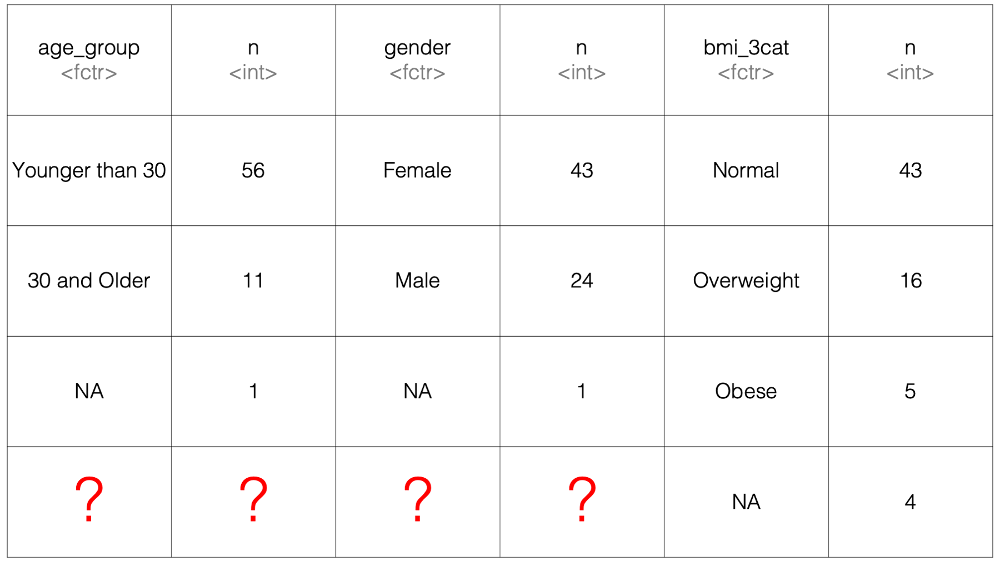
Because summarise() lays the results out side-by-side, it’s not clear what would go into the 4 cells in the bottom-left corner of the results data frame. Therefore, it isn’t necessarily straightforward for dplyr to figure out how it should return such results to us.
However, when we use a for loop, we can create our own structure to hold the results. And, that structure can be pretty much any structure that meets our needs. In this case, one option would be to create a data frame to hold our categorical counts that looks like this:
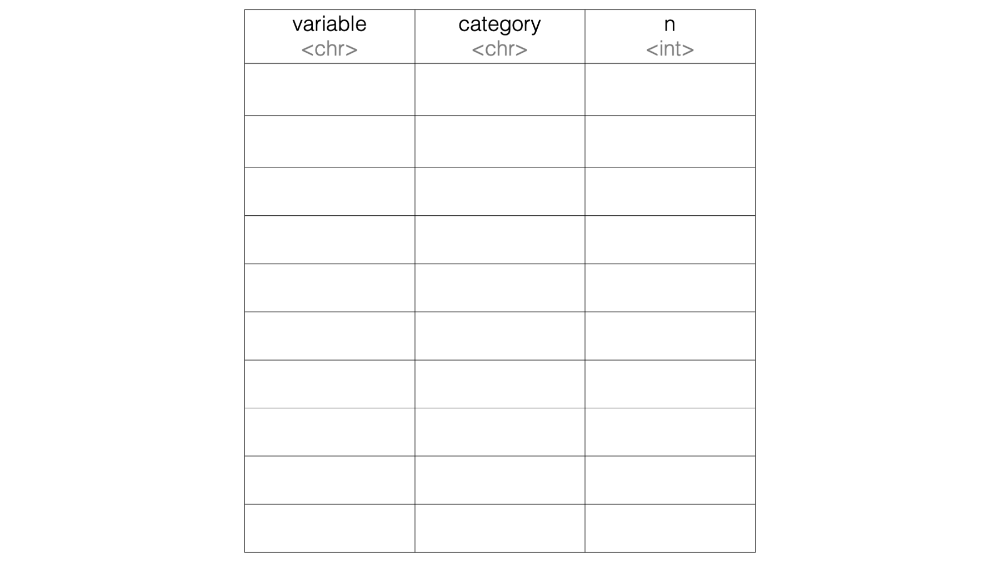
Then, we can use a for loop to fill in the empty data frame so that we end up with results that look like this:
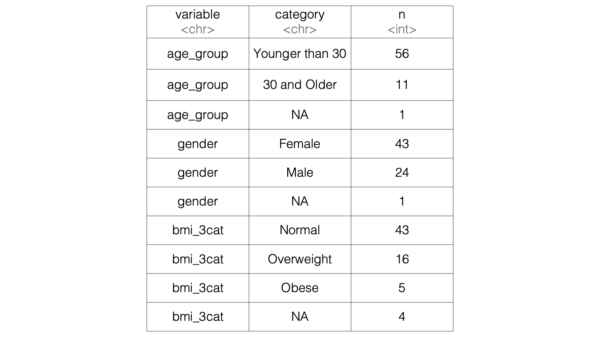
The process for getting to our finished product is a little bit involved (and probably a little intimidating for some of you) and will require us to cover a couple new topics. So, we’ll start by giving you the complete code for accomplishing this task. Then, we’ll pick the code apart, piece-by-piece, to make sure we understand how it works.
Here is the complete solution:
# Structure 1. An object to contain the results.
# Create the data frame structure that will contain our results
cat_table <- tibble(
variable = vector("character"),
category = vector("character"),
n = vector("numeric")
)
# Structure 2. The actual for loop.
# For each column, get the column name, category names, and count.
# Then, add them to the bottom of the results data frame we created above.
for(i in c("age_group", "gender", "bmi_3cat")) {
cat_stats <- study %>%
count(.data[[i]]) %>% # Use .data to refer to the current data frame.
mutate(variable = names(.)[1]) %>% # Use . to refer to the result to this point.
rename(category = 1)
# Here is where we update cat_table with the results for each column
cat_table <- bind_rows(cat_table, cat_stats)
}cat_table# A tibble: 10 × 3
variable category n
<chr> <chr> <dbl>
1 age_group Younger than 30 56
2 age_group 30 and Older 11
3 age_group <NA> 1
4 gender Female 43
5 gender Male 24
6 gender <NA> 1
7 bmi_3cat Normal 43
8 bmi_3cat Overweight 16
9 bmi_3cat Obese 5
10 bmi_3cat <NA> 4We’ll use the rest of this chapter section to walk through the code above and make sure we understand how it works. For starters, we will create our results data frame structure like this:
cat_table <- tibble(
variable = vector("character"),
category = vector("character"),
n = vector("numeric")
) str(cat_table)tibble [0 × 3] (S3: tbl_df/tbl/data.frame)
$ variable: chr(0)
$ category: chr(0)
$ n : num(0) As you can see, we created an empty data frame with three columns. One to hold the variable names, one to hold the variable categories, and one to hold the count of occurrences of each category. Now, we can use a for loop to iteratively add results to our empty data frame structure. This works similarly to the way we added mean values to the xyz_means vector in the first example above. As a reminder, here is what the for loop code looks like:
for(i in c("age_group", "gender", "bmi_3cat")) {
cat_stats <- study %>%
count(.data[[i]]) %>%
mutate(variable = names(.)[1]) %>%
rename(category = 1)
cat_table <- bind_rows(cat_table, cat_stats)
}For our next step, let’s walk through the first little chunk of code inside the for loop body. Specifically:
cat_stats <- study %>%
count(.data[[i]]) %>%
mutate(variable = names(.)[1]) %>%
rename(category = 1)If we were using this code to analyze a single variable, as opposed to using it in a for loop, this is what the result would look like:
cat_stats <- study %>%
count(age_group) %>%
mutate(variable = names(.)[1]) %>%
rename(category = 1) %>%
print()# A tibble: 3 × 3
category n variable
<fct> <int> <chr>
1 Younger than 30 56 age_group
2 30 and Older 11 age_group
3 <NA> 1 age_groupWe’ve already seen what the study %>% count(age_group) part of the code does, and we already know that we can use mutate() to create a new column in our data frame. In this case, the name of the new column is variable. But, you may be wondering what the names(.)[1] after the equal sign does. Let’s take a look. Here, we can see the data frame that is getting passed to mutate():
cat_stats <- study %>%
count(age_group) %>%
print()# A tibble: 3 × 2
age_group n
<fct> <int>
1 Younger than 30 56
2 30 and Older 11
3 <NA> 1It’s a data frame with two columns. The first column actually has two different kinds of information that we need. It contains the name of the variable being analyzed as the column name, and it contains all the categories of that variable as the column values. We want to separate those two pieces of information into two columns. This task is similar to some of the “tidy data” tasks we worked through in the chapter on restructuring data frames. In fact, we can also use pivot_longer() to get the result we want:
study %>%
count(age_group) %>%
tidyr::pivot_longer(
cols = "age_group",
names_to = "variable",
values_to = "category"
)# A tibble: 3 × 3
n variable category
<int> <chr> <fct>
1 56 age_group Younger than 30
2 11 age_group 30 and Older
3 1 age_group <NA> In this solution for this task, however, we’re not going to use pivot_longer() for a couple of reasons. First, it’s an opportunity for us to learn about the special use of dot (.) inside of dplyr verbs. Second, this solution will use dplyr only. It will not require us to use the tidyr package.
Before we talk about the dot, however, let’s make sure we know what the names()[1] is doing. There aren’t any new concepts here, but we may not have used them this way before. The name() function just returns a character vector containing the column names of the data frame we pass to it. So, when we pass the cat_stats data frame to it, this is what it returns:
names(cat_stats)[1] "age_group" "n" We want to use the first value, "age_group" to fill-in our the new variable column we want to create. We can use bracket notation to subset the first element of the character vector of column names above like this:
names(cat_stats)[1][1] "age_group"What does the dot do? Well, outside of our dplyr pipeline, it doesn’t do anything useful:
names(.)[1]Error: object '.' not foundInside of our dplyr pipeline, you can think of it as a placeholder for whatever is getting passed to the dplyr verb – mutate() in this case. So, what is getting passed to mutate? The result of everything that comes before mutate() in the pipeline. And what does that result look like in this case? It looks like this:
study %>%
count(age_group)# A tibble: 3 × 2
age_group n
<fct> <int>
1 Younger than 30 56
2 30 and Older 11
3 <NA> 1So, we can use the dot inside of mutate as a substitute for the results data frame getting passed to mutate(). Said another way. To dplyr, this:
names(study %>% count(age_group))and this:
study %>% count(age_group) %>% names(.)are the exact same thing in this context:
cat_stats <- study %>%
count(age_group) %>%
mutate(variable = names(.)[1]) %>%
print()# A tibble: 3 × 3
age_group n variable
<fct> <int> <chr>
1 Younger than 30 56 age_group
2 30 and Older 11 age_group
3 <NA> 1 age_groupNow, we have all the variables we wanted for our final results table. Keep in mind, however, that we will eventually be stacking similar results from our other variables (i.e., gender and bmi_3cat) below these results using bind_rows(). You may remember from the chapter on working with multiple data frames that the bind_rows() function matches columns together by name, not by position. So, we need to change the age_group column name to category. If we don’t, we will end up with something that looks like this:
study %>%
count(age_group) %>%
bind_rows(study %>% count(gender))# A tibble: 6 × 3
age_group n gender
<fct> <int> <fct>
1 Younger than 30 56 <NA>
2 30 and Older 11 <NA>
3 <NA> 1 <NA>
4 <NA> 43 Female
5 <NA> 24 Male
6 <NA> 1 <NA> Not what we want, right? Again, if we were doing this analysis one variable at a time, our code might look like this:
cat_stats <- study %>%
count(age_group) %>%
mutate(variable = names(.)[1]) %>%
rename(category = age_group) %>%
print()# A tibble: 3 × 3
category n variable
<fct> <int> <chr>
1 Younger than 30 56 age_group
2 30 and Older 11 age_group
3 <NA> 1 age_groupWe used the rename() function above to change the name of the first column from age_group to category. Remember, the syntax for renaming columns with the rename() function is new_name = old_name. But, inside our for loop we will actually have 3 old names, right? In the first iteration old_name will be age_group, in the second iteration old_name will be gender, and in the third iteration old_name will be bmi_cat. We could loop over the names, but there’s an even easier solution. Instead of asking rename() to rename our column by name using this syntax, new_name = old_name, we can also ask rename() to rename our column by position using this syntax, new_name = column_number. So, in our example above, we could get the same result by replacing age_group with 1 because age_group is the first column in the data frame:
cat_stats <- study %>%
count(age_group) %>%
mutate(variable = names(.)[1]) %>%
rename(category = 1) %>% # Replace age_group with 1
print()# A tibble: 3 × 3
category n variable
<fct> <int> <chr>
1 Younger than 30 56 age_group
2 30 and Older 11 age_group
3 <NA> 1 age_groupAnd, using this method, we don’t have to make any changes to the value being passed to rename() when we are analyzing our other variables. For example:
cat_stats <- study %>%
count(gender) %>% # Changed the column from age_group to gender
mutate(variable = names(.)[1]) %>%
rename(category = 1) %>% # Still have 1 here
print()# A tibble: 3 × 3
category n variable
<fct> <int> <chr>
1 Female 43 gender
2 Male 24 gender
3 <NA> 1 gender At this point, we have all the elements we need manually create the data frame of final results we want. First, we create the empty results table:
cat_table <- tibble(
variable = vector("character"),
category = vector("character"),
n = vector("numeric")
) %>%
print()# A tibble: 0 × 3
# ℹ 3 variables: variable <chr>, category <chr>, n <dbl>Then, we get the data frame of results for age_group:
cat_stats <- study %>%
count(age_group) %>%
mutate(variable = names(.)[1]) %>%
rename(category = 1) %>%
print()# A tibble: 3 × 3
category n variable
<fct> <int> <chr>
1 Younger than 30 56 age_group
2 30 and Older 11 age_group
3 <NA> 1 age_groupThen, we use bind_rows() to add those results to our cat_table data frame:
cat_table <- cat_table %>%
bind_rows(cat_stats) %>%
print()# A tibble: 3 × 3
variable category n
<chr> <chr> <dbl>
1 age_group Younger than 30 56
2 age_group 30 and Older 11
3 age_group <NA> 1Then, we copy and paste the last two steps above, replacing age_group with gender:
cat_stats <- study %>%
count(gender) %>% # Change to gender
mutate(variable = names(.)[1]) %>%
rename(category = 1)
cat_table <- cat_table %>%
bind_rows(cat_stats) %>%
print()# A tibble: 6 × 3
variable category n
<chr> <chr> <dbl>
1 age_group Younger than 30 56
2 age_group 30 and Older 11
3 age_group <NA> 1
4 gender Female 43
5 gender Male 24
6 gender <NA> 1Then, we copy and paste the two steps above, replacing gender with bmi_3cat:
cat_stats <- study %>%
count(bmi_3cat) %>% # Change to bmi_3cat
mutate(variable = names(.)[1]) %>%
rename(category = 1)
cat_table <- cat_table %>%
bind_rows(cat_stats) %>%
print()# A tibble: 10 × 3
variable category n
<chr> <chr> <dbl>
1 age_group Younger than 30 56
2 age_group 30 and Older 11
3 age_group <NA> 1
4 gender Female 43
5 gender Male 24
6 gender <NA> 1
7 bmi_3cat Normal 43
8 bmi_3cat Overweight 16
9 bmi_3cat Obese 5
10 bmi_3cat <NA> 4That is exactly the final result we wanted, and you might have noticed that the only elements of the code chunks above that changed were the column names being passed to count(). If we can just figure out how to loop over the column names, then we can remove a ton of unnecessary repetition from our code. Our first attempt might look like this:
for(i in c(age_group, gender, bmi_3cat)) {
study %>%
count(i) %>%
mutate(variable = names(.)[1]) %>%
rename(category = 1)
}Error: object 'age_group' not foundHowever, it doesn’t work. In the code above, R is looking for and object in the global environment called age_group. Of course, there is no object in the global environment named age_group. Rather, there is an object in the global environment named study that has a column named age_group.
We can get rid of that error by wrapping each column name in quotes:
for(i in c("age_group", "gender", "bmi_3cat")) {
study %>%
count(i) %>%
mutate(variable = names(.)[1]) %>%
rename(category = 1)
}Error in `count()`:
! Must group by variables found in `.data`.
✖ Column `i` is not found.Unfortunately, that just gives us a different error. In the code above, count() is looking for a column named i in the study data frame. You may be wondering why i is not being converted to "age_group", "gender", and "bmi_3cat" in the code above. The short answer is that it’s because of tidy evaluation and data masking.
So, we need a way to iteratively pass each quoted column name to the count() function inside our for loop body, but also let dplyr know that they are column names, not just random character strings. Fortunately, the rlang package (which is partially imported with dplyr), provides us with a special construct that can help us solve this problem. It’s called the .data pronoun. Here’s how we can use it:
for(i in c("age_group", "gender", "bmi_3cat")) {
study %>%
count(.data[[i]]) %>%
mutate(variable = names(.)[1]) %>%
rename(category = 1) %>%
print()
}# A tibble: 3 × 3
category n variable
<fct> <int> <chr>
1 Younger than 30 56 age_group
2 30 and Older 11 age_group
3 <NA> 1 age_group
# A tibble: 3 × 3
category n variable
<fct> <int> <chr>
1 Female 43 gender
2 Male 24 gender
3 <NA> 1 gender
# A tibble: 4 × 3
category n variable
<fct> <int> <chr>
1 Normal 43 bmi_3cat
2 Overweight 16 bmi_3cat
3 Obese 5 bmi_3cat
4 <NA> 4 bmi_3catHere’s how it works. Remember that data masking allows us to write column names directly in dplyr code without having to use dollar sign or bracket notation to tell R which data frame that column lives in. For example, in the following code, dplyr just “knows” that age_group is a column in the study data frame:
study %>%
count(age_group)# A tibble: 3 × 2
age_group n
<fct> <int>
1 Younger than 30 56
2 30 and Older 11
3 <NA> 1The same is not true for base R functions. For example, we can’t pass age_group directly to the table() function:
table(age_group)Error: object 'age_group' not foundWe have to use dollar sign or bracket notation to tell R that age_group is a column in study:
table(study[["age_group"]])
Younger than 30 30 and Older
56 11 This is a really nice feature of dplyr when we’re using dplyr interactively. But, as we’ve already discussed, it does present us with some challenges when we use dplyr functions inside of the functions we write ourselves and inside of for loops.
As you can see in the code below, the tidy evaluation essentially blocks the i inside of count() from being replaced with each of the character strings we are looping over. Instead, dplyr looks for a literal i as a column name in the study data frame.
for(i in c("age_group", "gender", "bmi_3cat")) {
study %>%
count(i)
}Error in `count()`:
! Must group by variables found in `.data`.
✖ Column `i` is not found.So, we need a way to tell dplyr that "age_group" is a column in the study data frame. Well, we know how to use quoted column names inside bracket notation. So, we could write code like this:
study %>%
count(study[["age_group"]])# A tibble: 3 × 2
`study[["age_group"]]` n
<fct> <int>
1 Younger than 30 56
2 30 and Older 11
3 <NA> 1However, the column name (i.e., study[["age_group"]]) in the results data frame above isn’t ideal to work with. Additionally, the code above isn’t very flexible because we have the study data frame hard-coded into it (i.e., study[["age_group"]]). That’s where the .data pronoun comes to the rescue:
study %>%
count(.data[["age_group"]])# A tibble: 3 × 2
age_group n
<fct> <int>
1 Younger than 30 56
2 30 and Older 11
3 <NA> 1The .data pronoun “is not a data frame; it’s a special construct, a pronoun, that allows you to access the current variables either directly, with .data$x or indirectly with .data[[var]].”1
When we put it all together, our code looks like this:
# Create the data frame structure that will contain our results
cat_table <- tibble(
variable = vector("character"),
category = vector("character"),
n = vector("numeric")
)
# For each column, get the column name, category names, and count.
# Then, add them to the bottom of the results data frame we created above.
for(i in c("age_group", "gender", "bmi_3cat")) {
cat_stats <- study %>%
count(.data[[i]]) %>% # Use .data to refer to the current data frame.
mutate(variable = names(.)[1]) %>% # Use . to refer to the current data frame.
rename(category = 1)
# Here is where we update cat_table with the results for each column
cat_table <- bind_rows(cat_table, cat_stats)
}cat_table# A tibble: 10 × 3
variable category n
<chr> <chr> <dbl>
1 age_group Younger than 30 56
2 age_group 30 and Older 11
3 age_group <NA> 1
4 gender Female 43
5 gender Male 24
6 gender <NA> 1
7 bmi_3cat Normal 43
8 bmi_3cat Overweight 16
9 bmi_3cat Obese 5
10 bmi_3cat <NA> 4And, we can do other interesting things with our results now that we have it in this format. For example, we can easily add percentages along with our counts like this:
cat_table %>%
group_by(variable) %>%
mutate(
percent = n / sum(n) * 100
)# A tibble: 10 × 4
# Groups: variable [3]
variable category n percent
<chr> <chr> <dbl> <dbl>
1 age_group Younger than 30 56 82.4
2 age_group 30 and Older 11 16.2
3 age_group <NA> 1 1.47
4 gender Female 43 63.2
5 gender Male 24 35.3
6 gender <NA> 1 1.47
7 bmi_3cat Normal 43 63.2
8 bmi_3cat Overweight 16 23.5
9 bmi_3cat Obese 5 7.35
10 bmi_3cat <NA> 4 5.88Finally, we could also write our own function that uses the code above. That way, we can easily reuse this code in the future:
cat_stats <- function(data, ...) {
# Create the data frame structure that will contain our results
cat_table <- tibble(
variable = vector("character"),
category = vector("character"),
n = vector("numeric")
)
# For each column in ..., get the column name, category names, and count.
# Then, add them to the bottom of the results data frame we created above.
for(i in c(...)) {
stats <- data %>%
count(.data[[i]]) %>% # Use .data to refer to the current data frame.
mutate(variable = names(.)[1]) %>% # Use . to refer to the current data frame.
rename(category = 1)
# Here is where we update cat_table with the results for each column
cat_table <- bind_rows(cat_table, stats)
}
# Return results
cat_table
}cat_stats(study, "age_group", "gender", "bmi_3cat")# A tibble: 10 × 3
variable category n
<chr> <chr> <dbl>
1 age_group Younger than 30 56
2 age_group 30 and Older 11
3 age_group <NA> 1
4 gender Female 43
5 gender Male 24
6 gender <NA> 1
7 bmi_3cat Normal 43
8 bmi_3cat Overweight 16
9 bmi_3cat Obese 5
10 bmi_3cat <NA> 4We covered a lot of material in this chapter. For loops tend to be confusing for people who are just learning to program. When you throw in the tidy evaluation stuff, it can be really confusing – even for experienced R programmers. So, if you are still feeling a little confused, don’t beat yourself up. Also, trying to memorize everything we covered in this chapter is not recommended. Instead, we recommend that you read it until you have understood what for loops are and when they might be useful at a high level. Then, refer back to this chapter (or other online references that discuss for loops) if you find yourself in a situation where you believe that for loops might be the right tool to help you complete a given programming task. Having said that, also keep in mind that for loops are rarely the only tool you will have at your disposal to complete the task. In the next chapter, we will learn how to use functionals, specifically the purrr package, in place of for loops. You may find this approach to iteration more intuitive.